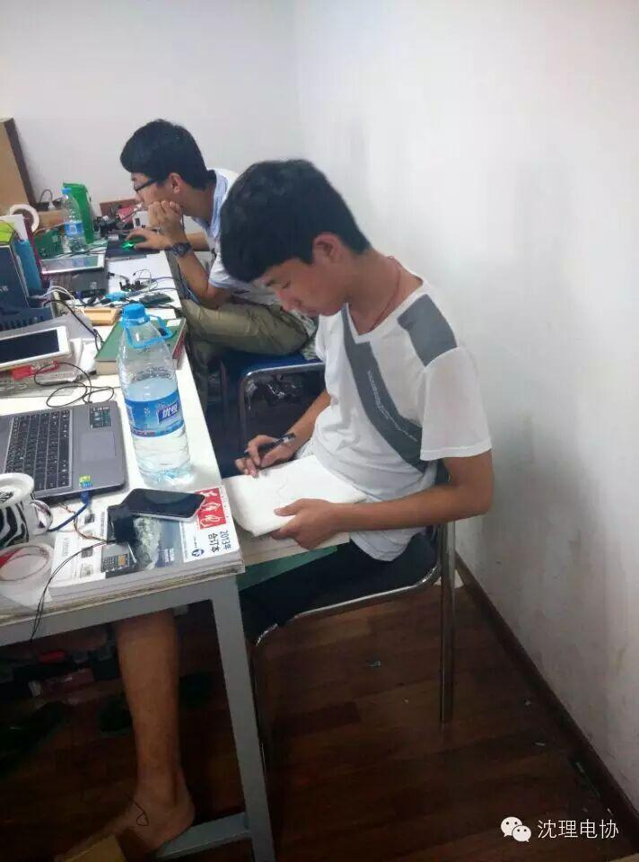
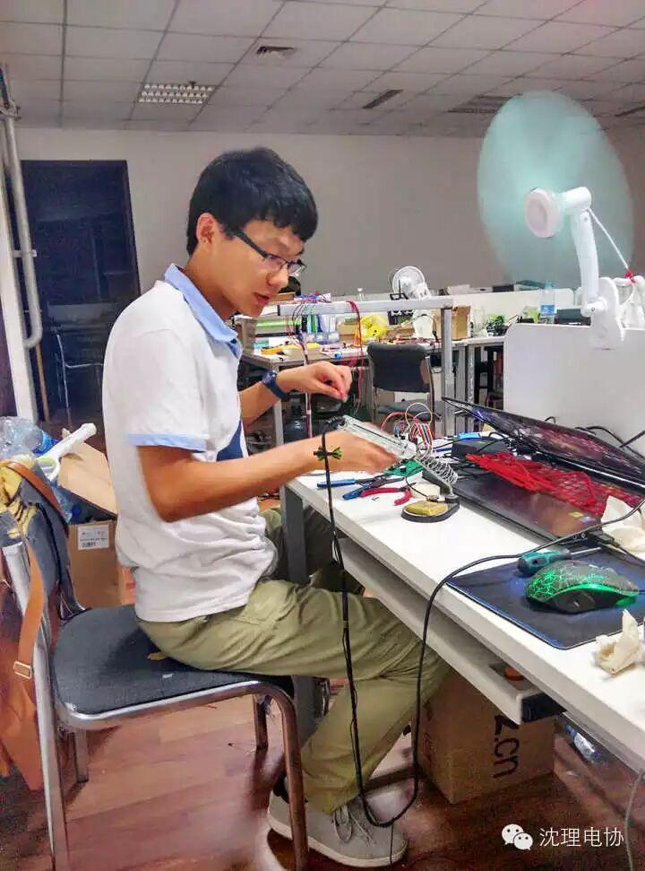
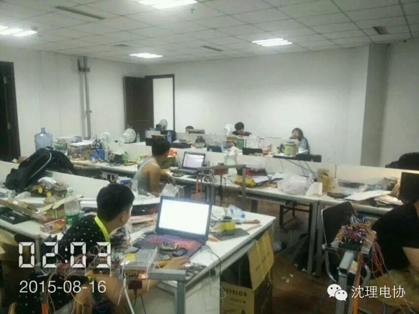
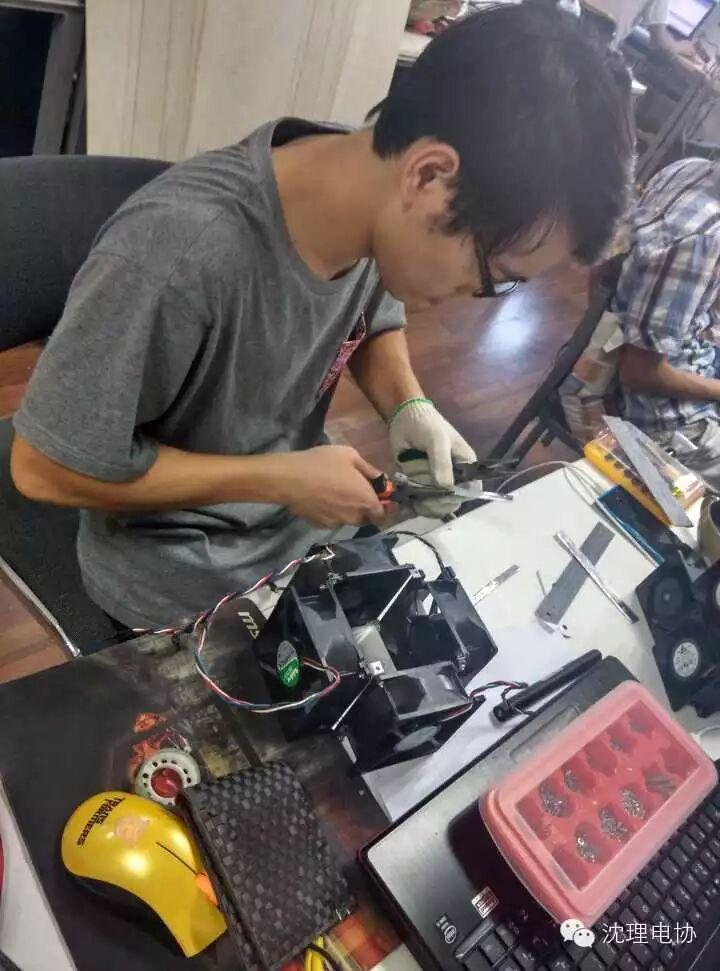
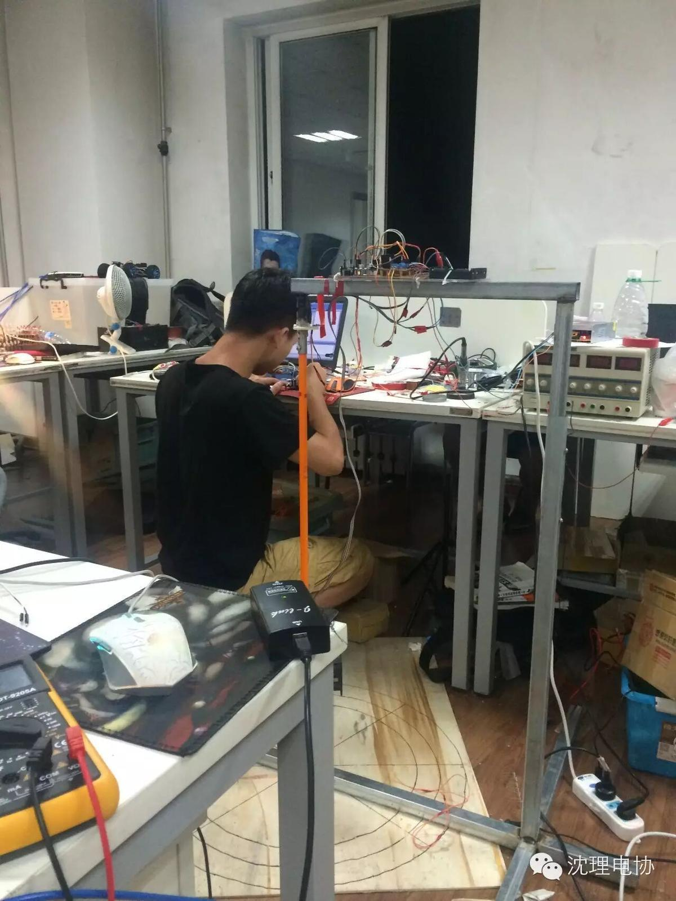
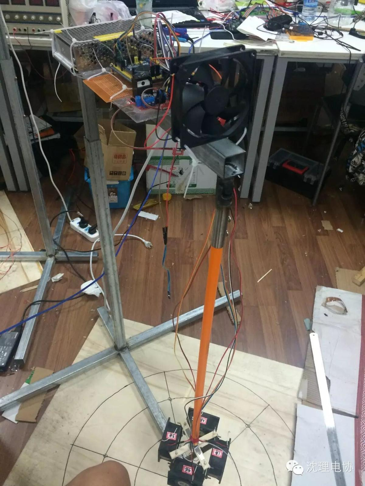

电子设计竞赛
全国大学生电子设计竞赛
全国大学生电子设计竞赛是教育部倡导的大学生学科竞赛之一，是面向大学生的群众性科技活动，目的在于推动高等学校促进信息与电子类学科课程体系和课程内容的改革。竞赛的特点是与高等学校相关专业的课程体系和课程内容改革密切结合，以推动其课程教学、教学改革和实验室建设工作。
小编子啊这里给大家带来了第一时间的报道，我校在本次大赛中取得了有意的成绩，我校共有10支队伍获得省二等奖，三支队伍获得省三等奖，可喜可贺
下面是学长学姐们认真工作的皂片~





还有学长们的作品


最后附上我校获奖名单：
| 沈阳理工大学 | 伍鑫 | 冀冲 | 张夏风 | 二等奖 |
| 沈阳理工大学 | 赵晓宇 | 刘城飞 | 周枫 | 二等奖 |
| 沈阳理工大学 | 任永成 | 刘宏文 | 万博宇 | 二等奖 |
| 沈阳理工大学 | 余森文 | 金玉 | 可少芳 | 二等奖 |
| 沈阳理工大学 | 刘勇 | 刘玉婷 | 罗鑫强 | 二等奖 |
| 沈阳理工大学 | 孟凡宇 | 刘晓雨 | 刘莹 | 二等奖 |
| 沈阳理工大学 | 周进凡 | 姚春雨 | 王显强 | 三等奖 |
| 沈阳理工大学 | 刘东 | 简星 | 柯达 | 成功参赛 |
| 沈阳理工大学 | 魏玉柱 | 姜竣博 | 彭博文 | 成功参赛 |
| 沈阳理工大学 | 刘博 | 马继超 | 刘奕灵 | 成功参赛 |
| 沈阳理工大学 | 张政 | 刘佳萍 | 边小刚 | 成功参赛 |
| 沈阳理工大学 | 李晓阳 | 高春旺 | 郭杨 | 成功参赛 |
| 沈阳理工大学 | 宋佳星 | 王学鹏 | 张敏强 | 二等奖 |
| 沈阳理工大学 | 李博然 | 金卫 | 马秀峰 | 二等奖 |
| 沈阳理工大学 | 张丰硕 | 柯晨旭 | 费聪聪 | 二等奖 |
| 沈阳理工大学 | 李建平 | 闫思成 | 王贵生 | 成功参赛 |
| 沈阳理工大学 | 刘睿 | 姜文众 | 郑宣金 | 成功参赛 |
| 沈阳理工大学 | 陈赛 | 郭振宇 | 王艺帆 | 二等奖 |
| 沈阳理工大学 | 黄伟 | 陈学意 | 陆远远 | 三等奖 |
| 沈阳理工大学 | 王文月 | 苏一博 | 张震 | 成功参赛 |
| 沈阳理工大学 | 王梓丞 | 梁芳铭 | 冷函阳 | 三等奖 |
↓↓↓长按扫描二维码或者公众号搜索“沈理电子协会”
详情关于竞赛题目可以点击阅读原文